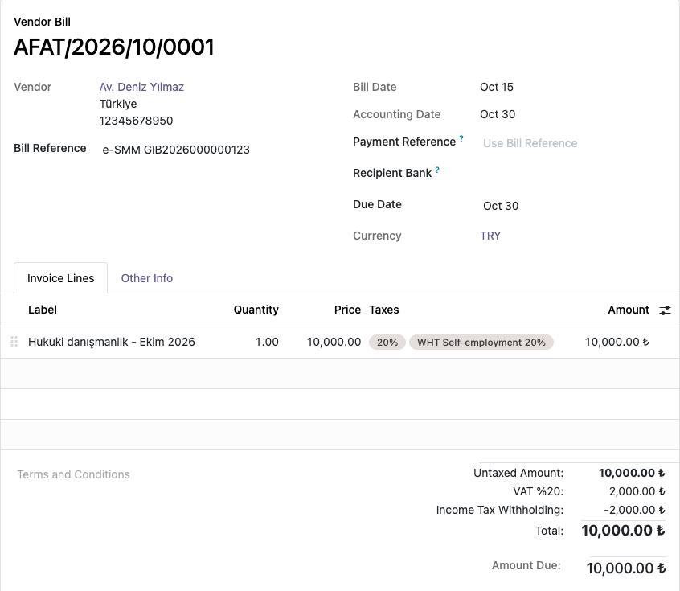
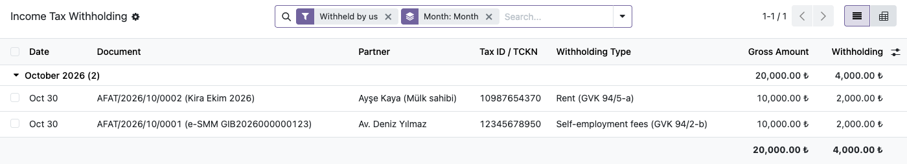

In Türkiye, a company paying a self-employed professional (lawyer, consultant, doctor) or an individual landlord withholds 20% income tax (stopaj) and pays it to the tax office. Odoo's Turkish localization has no tax for self-employment fees, and its rent withholding tax posts to account 191 (deductible VAT). This module adds the withholding taxes on the right accounts and lists them for the monthly withholding return.
Lawyer fee 10,000.00 + VAT 2,000.00 − stopaj 2,000.00 = 10,000.00 to pay, and 2,000.00 owed to the tax office.
Rates can change by presidential decree; the taxes are ordinary Odoo taxes and can be edited.


Odoo 19.0 (tested on Community). Depends on l10n_tr. No external service is used.
Paper self-employment receipts are not printed: most professionals must issue e-SMM through the
Revenue Administration. Licensed under LGPL-3. Questions and bug reports:
destek@odoo-tr.com
Serbest meslek erbabına (avukat, mali müşavir, danışman, doktor) ya da şahıs mülk sahibine yapılan ödemelerde kesilen %20 gelir vergisi stopajını Odoo'ya ekler. Odoo'nun Türkiye modülünde serbest meslek stopajı yoktur; kira stopajı ise 191 İndirilecek KDV hesabına yazar.
Kâğıt serbest meslek makbuzu basılmaz; serbest meslek erbabının çoğu e-SMM düzenlemek zorundadır. Oranlar Cumhurbaşkanı kararıyla değişebilir; vergiler Odoo'da düzenlenebilir.
Sorular ve hata bildirimleri: destek@odoo-tr.com